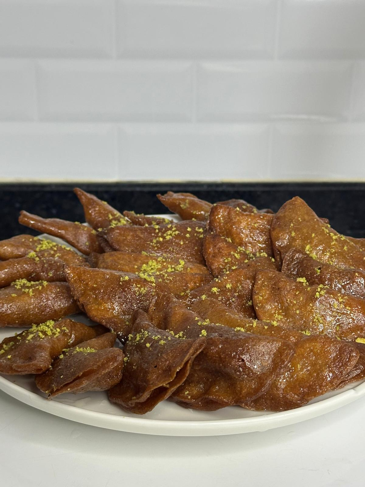

Şerbet tadını özleyenler için; cevizli, rafine şekersiz ve hafif bir tatlı.
Elma suyu ve su tencereye alınır, limon suyu eklenir ve kaynatılır. Kaynadıktan sonra kısık ateşte 5–10 dakika pişirilir ve koyulaşınca ocaktan alınır.
Maya ve ılık su karıştırılır, aktifleşmesi beklenir. Un ve kabartma tozu eklenir, pürüzsüz bir hamur hazırlanır ve 30 dakika mayalanmaya bırakılır.
Hamur tavaya dökülerek tek taraflı pişirilir. Üzeri göz göz olunca alınır, içine ceviz konur ve kapatılır. Kızgın yağda kızartılır.
Çıkar çıkmaz şerbete alınır ve bekletmeden servis edilir.
Kaynak: @pastaatolyesiist